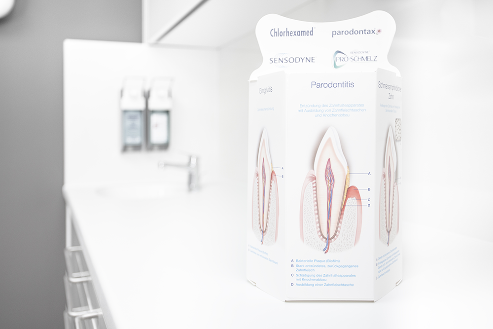
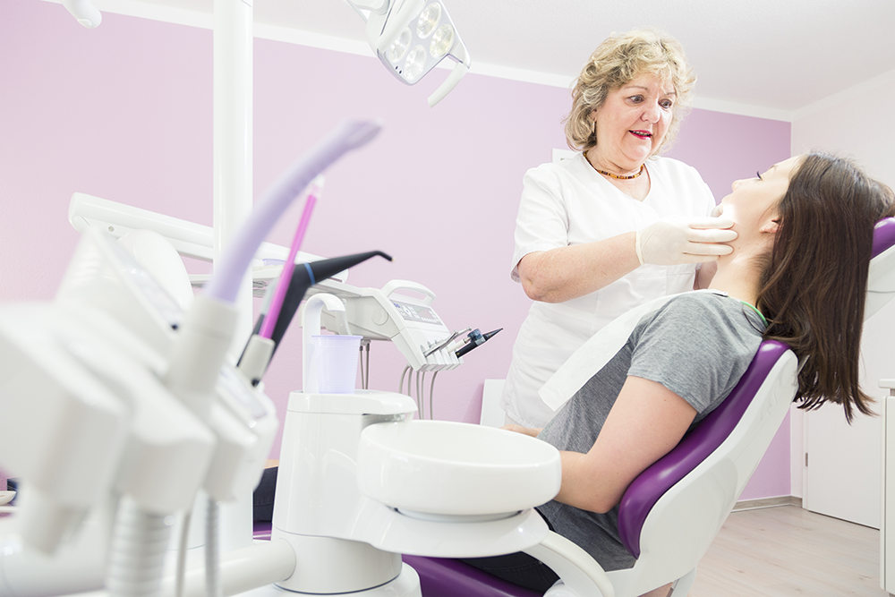
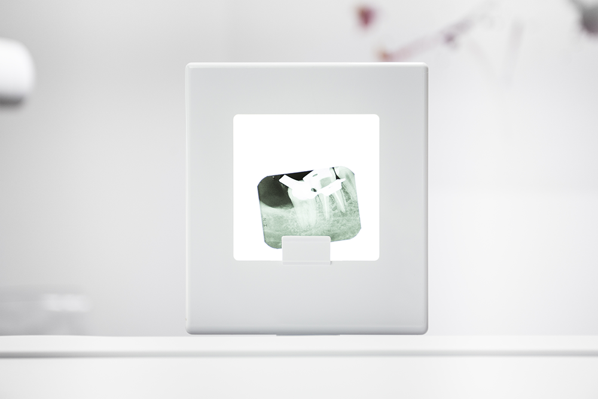
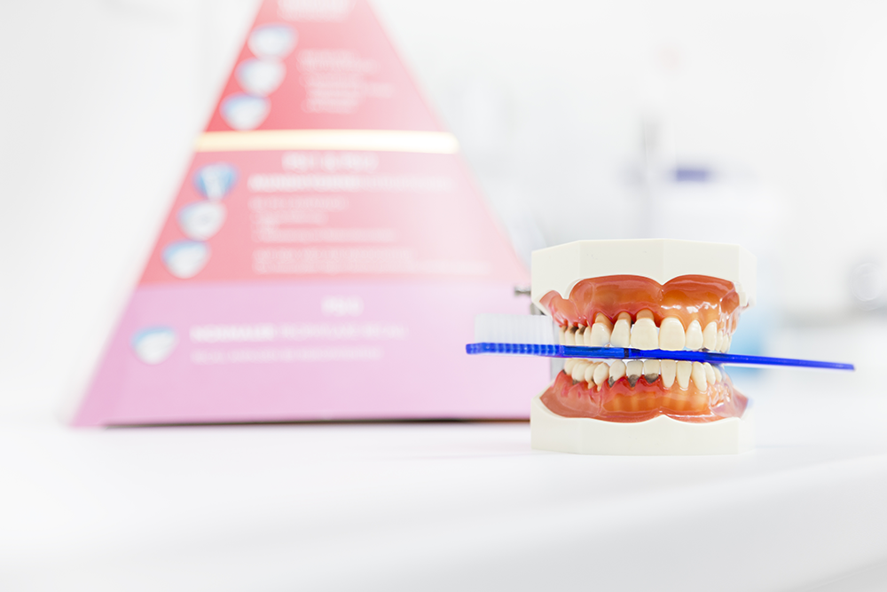
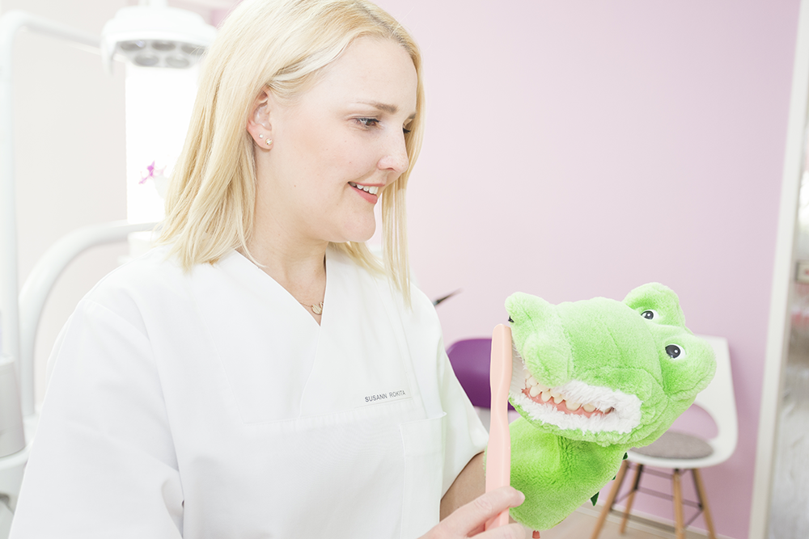

Unter prothetischer Versorgung versteht man, die durch Karies verlorengegange/n Zahnsubstanz / Zähne mit Kronen, Brücken und Prothesen wieder herzustellen.

Parodontitisbehandlung
Parodontitis ist eine bakterielle Entzündung des Zahnhalteapparates, die zum Rückgang des Zahnfleisches und des Knochens führt.

Ästhetische Zahnheilkunde
Bei der Behandlung wird ein ästhetisch wirkendes harmonisches Gesamtergebnis angestrebt. Die ästhetische Zahnheilkunde orientiert ...

Endodontie (Wurzelkanalbehandlungen)
Die Wurzelkanalbehandlung ist die letzte Rettung für den Zahn.
Wurzelkanalbehandlungen werden bei entzündeten Zähnen durchgeführt. Zu einer Entzündung kommt es
...

Professionelle Zahnreinigung
Die Professionelle Zahnreinigung (PZR) ist eine vom Fachpersonal durchgeführte Zahnreinigung. Die Zahnreinigung geht über die gewöhnliche häusliche Zahnpflege hinaus. Bei der Behandlung werden harte und weiche Zahnbeläge entfernt ...
Kosmetische Zahnbehandlung
Kosmetische Zahnbehandlung befasst sich mit Zahnschmuck und Bleaching / Zahnaufhellung. Lesen sie mehr ...

Kinderzahnheilkunde
In der Kinderzahnhilkunde dreht es sich vor allem um die Versorgung der jungen Zähne. Erfahren Sie mehr über Fissurenversieglung, Fluoridierung, Primär-Primärprophylaxe für werdende Eltern, Zahnvorsorge und Früherkennung ab dem Kleinkindalter.